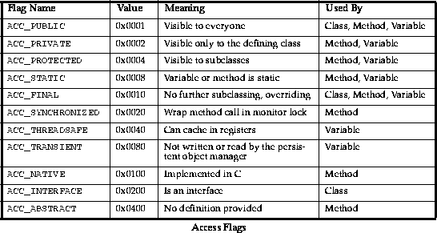
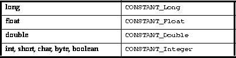

Contents Prev Next Up
Class File Format
Format
- magic
-
- version
-
- constant_pool_count
-
- constant_pool
-
- access_flags
-
- this_class
-
- super_class
-
- interfaces_count
-
- interfaces
-
- fields_count
-
- fields
-
- methods_count
-
- methods
-
- attributes_count
-
- attributes
-
- Source File Attribute
-
- attribute_name_index
-
- attribute_length
-
- sourcefile_index
-
- Fields
-
- access_flags
-
- name_index
-
- signature_index
-
- attributes_count
-
- attributes
-
- Constant Value Attribute
-
- attribute_name_index
-
- attribute_length
-
- constantvalue_index
-
The following pseudo-structure gives a top-level description of the format of a class file:
ClassFile {
u4 magic;
u4 version;
u2 constant_pool_count;
cp_info constant_pool[constant_pool_count - 1];
u2 access_flags;
u2 this_class;
u2 super_class;
u2 interfaces_count;
u2 interfaces[interfaces_count];
u2 fields_count;
field_info fields[fields_count];
u2 methods_count;
method_info methods[methods_count];
u2 attributes_count;
attribute_info attributes[attribute_count];
}
magic
This field must have the value 0xCAFEBABE.
version
This field contains the version number of the Java compiler that produced this class file. Different version numbers indicate incompatible changes to either the format of the class file or to the bytecodes.
The current Java version number is 45.
constant_pool_count
This field indicates the number of entries in the constant pool table.
constant_pool
The constant pool is an array of values. These values are the various string constants, class names, field names, and others that are referred to by the class structure or by the code.
constant_pool[0] is always unused. The values of constant_pool entries 1 through constant_pool_count-1 are described by the bytes that follow. These bytes are explained more fully in the section "The Constant Pool."
access_flags
This field is a set of sixteen flags used by classes, methods, and fields to describe various properties of the field, method, or class. The flags are also used to show how they can be accessed by methods in other classes. Below is a table of all the access flags. The flags that are used by classes are ACC_PUBLIC, ACC_FINAL, and ACC_INTERFACE.

this_class
This value is an index into the constant pool. constant_pool[this_class] must be a class, and gives the index of this class in the constant pool.
super_class
This value is an index into the constant pool. If the value of super_class is non-zero, then constant_pool[super_class] must be a class, and gives the index of this class's superclass in the constant pool.
If the value of super_class is zero, then the class being defined must be Object, and it has no superclass.
interfaces_count
This field gives the number of interfaces that this class implements.
interfaces
Each value in the array is an index into the constant pool. If an array value is non-zero, then constant_pool[interfaces[i]], for 0 <= i < interfaces_count, must be a class, and gives the index of an interface that this class implements.
fields_count
This value gives the number of instance variables, both static and dynamic, defined by this class. This array only includes those variables that are defined explicitly by this class. It does not include those instance variables that are accessible from this class but are inherited from super classes.
fields
Each value is a more complete description of a field in the class. See the section "Fields" for more information on the field_info structure.
methods_count
This value gives the number of methods, both static and dynamic, defined by this class. This array only includes those methods that are explicitly defined by this class. It does not include inherited methods.
methods
Each value is a more complete description of a method in the class. See the section "Methods" for more information on the method_info structure.
attributes_count
This value gives the number of additional attributes about this class.
attributes
A class can have any number of optional attributes associated with it. Currently, the only class attribute recognized is the "SourceFile" attribute, which gives the name of the source file from which this class file was compiled.
Source File Attribute
The "SourceFile" attribute has the following format:
SourceFile_attribute {
u2 attribute_name_index;
u2 attribute_length;
u2 sourcefile_index;
}
attribute_name_index
constant_pool[attribute_name_index] is the string "SourceFile."
attribute_length
The length of a SourceFile_attribute must be 2.
sourcefile_index
constant_pool[sourcefile_index] is a string giving the source file from which this class file was compiled.
The information for each field immediately follows the field_count field in the class file. Each field is described by a variable length field_info structure. The format of this structure is as follows:
field_info {
u2 access_flags;
u2 name_index;
u2 signature_index;
u2 attributes_count;
attribute_info attributes[attribute_count];
}
access_flags
This is a set of sixteen flags used by classes, methods, and fields to describe various properties and how they many be accessed by methods in other classes. See the table "Access Flags" on page 53 which gives the meaning of the bits in this field.
The possible fields that can be set for a field are ACC_PUBLIC, ACC_PRIVATE, ACC_PROTECTED, ACC_STATIC, ACC_FINAL, ACC_THREADSAFE, and ACC_TRANSIENT.
At most one of ACC_PUBLIC and ACC_PRIVATE can be set for any method.
name_index
constant_pool[name_index] is a string which is the name of the field.
signature_index
constant_pool[signature_index] is a string which is the signature of the field. See the section "Signatures" for more information on signatures.
attributes_count
This value gives the number of additional attributes about this field.
attributes
A field can have any number of optional attributes associated with it. Currently, the only field attribute recognized is the "ConstantValue" attribute, which indicates that this field is a static numeric constant, and gives the constant value of that field.
Any other attributes are skipped.
Constant Value Attribute
The "ConstantValue" attribute has the following format:
ConstantValue_attribute {
u2 attribute_name_index;
u2 attribute_length;
u2 constantvalue_index;
}
attribute_name_index
constant_pool[attribute_name_index] is the string "SourceFile."
attribute_length
The length of a SourceFile_attribute must be 2.
constantvalue_index
constant_pool[constantvalue_index]gives the constant value for this field.
The constant pool entry must be of a type appropriate to the field, as shown by the following table:

Contents Prev Next Up
Generated with CERN WebMaker